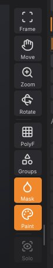

Navigating the view
This chapter explains how to rotate, pan and zoom the camera with a mouse, a pen or the right-shelf buttons, how to frame the model, and which display toggles help while you sculpt.
How the camera works#
The camera orbits around a target point. By default rotation is free, as in ZBrush: dragging turns the model about the screen's own axes, so it follows the cursor and can roll right over the top. Hold Shift while rotating to snap to the nearest front, back, side, top or bottom view; let go of Shift and the drag carries on from where the cursor is. If you prefer the model to stay upright, as in Blender or Maya, set Preferences > Interface > Rotation to Turntable: sideways drags then turn the model around its vertical axis and up-down drags tilt it, stopping just short of looking straight down or up.
Panning moves the target; zooming moves the camera closer to it or further away. The view is a perspective view with a 35 degree field of view.
Navigation starts only on the canvas. A drag that begins on a shelf, a tray or a palette never moves the camera.
Mouse and pen#
| To | Do this |
|---|---|
| Rotate | Left-drag on the background, or right-drag anywhere on the canvas; add Shift to snap to an axis view |
| Roll (turn about the view axis) | Shift+click the background, let go of Shift, then drag (ZBrush) |
| Pan | Alt+left-drag on the background, Alt+right-drag, or middle-drag |
| Zoom | Mouse wheel; Alt+left-drag on the background, then let go of Alt and keep dragging; Ctrl+right-drag; Ctrl+middle-drag; with the SculptForge input style also Ctrl+left-drag on the background |
| Frame the model | F, or Frame on the right shelf |
Zoom drags go the ZBrush way: drag up to zoom out, down to zoom in. The SculptForge input style (Preferences > Input) reverses them: drag up to come closer. | Frame one SubTool | Shift+Alt+click it (it becomes the active SubTool) |
"Background" means any part of the canvas where the cursor isn't over the model. A left-drag that starts on the model sculpts instead, so with a pen or a one-button mouse, start rotations beside the model. When the model fills the view, zoom out a little or use the right-shelf buttons.
On macOS, Cmd works wherever this guide says Ctrl for these gestures, except Ctrl+middle-drag, which needs Ctrl itself.
The right-shelf navigation buttons#
The right shelf has three buttons you drag on rather than click, as in ZBrush. They are handy with a pen, on a laptop trackpad, or when the model fills the canvas and there is no background to drag on.


| Button | Drag on it to |
|---|---|
| Frame | (click) Fit the whole scene in the view (F) |
| Move | Pan the view |
| Zoom | Zoom: drag up to come closer, down to move away |
| Rotate | Orbit the view |
The button stays orange while you drag. Frame is also in the Render and Transform palettes.
Framing#
Frame (F) points the camera at the centre of the scene and moves it back until everything fits: every visible SubTool, plus the Gaussian splats when they are shown. SculptForge frames the scene for you when you open a file or start from a new primitive. Use it after panning far away, or when a model comes in at an unusual scale.
Display toggles that help navigation#
These live on the right shelf and in the Render palette:
- PolyF (Shift+F): shows the polygons of the active SubTool over the surface, ZBrush's PolyFrame. Quads show as quads (see Quads and triangles). Useful for judging mesh density before you subdivide or remesh.
- Groups: colours each polygroup.
- Mask: darkens masked areas.
- Paint: shows polypaint colours (off shows the plain material).
- Solo: shows only the active SubTool, to get at parts hidden behind others.
- Show Mesh (Render palette): hides the sculpt, for example to look at a splat capture on its own.
Fullscreen (F11) and hiding the shelves (Tab) give the canvas the most room. See The interface.